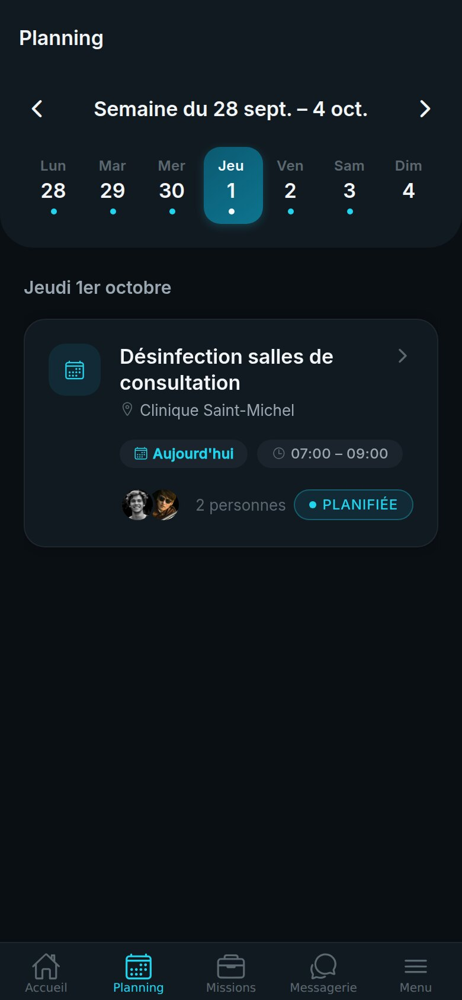
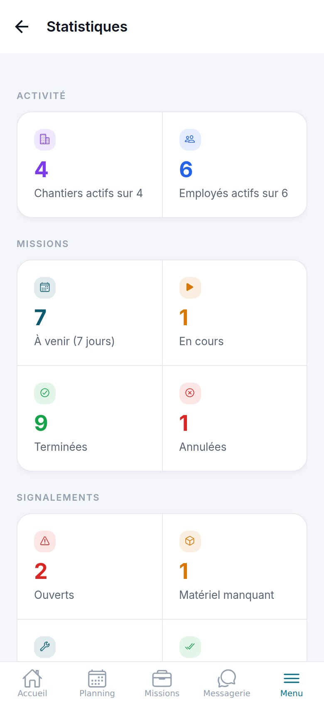
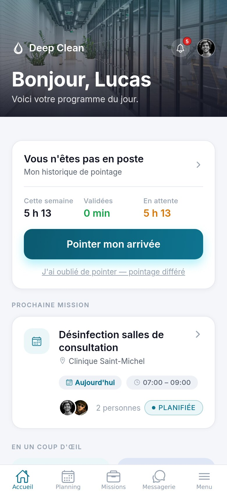

PRÉSENTATION · OCTOBRE 2026
PRÉSENTATION · OCTOBRE 2026
Deep
Clean
L'application qui fait tourner votre entreprise de nettoyage. Du chantier jusqu'au bureau de la direction.
EMPLOYÉS · CHEFS D'ÉQUIPE · SUPERVISEURS · RH · DIRECTION


